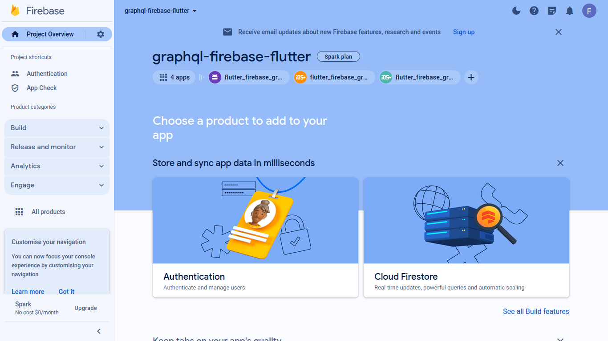

Things to keep in mind
- This codelabs was tested with Ubuntu in mind using the Terminal. For Mac and Windows, see their respective equivalent.
- The IDE I've used for this codelab is VSCode, some extensions or plugins I may use not be available on other IDEs.
- This is my own codelab, I am not part of Google nor I have been endorsed by them.
What you'll learn
- ✅ Setup your Firebase and Flutter project.
- ✅ Configure Firebase authentication emulator.
- ✅ Setup GraphQL with Dgraph to use Firebase authentication emulator.
- ✅ Build a Flutter app that allow authenticated user to use the GraphQL backend.
- ✅ Bonus: Setup GraphQL with Dgraph to use Firebase live production authentication.
Prerequises
- A bit of Flutter knowledge, starting a GraphQL server with Dgraph, create models with Freezed and state management with Riverpod. All which are covered in my codelab Introduction of GraphQL in Flutter.
- A bit a Firebase knowledge but not required for this codelab but I do recommend the Get To Know Firebase Codelab and Firebase emulator suite from the Flutter team.
Firebase Console
Go to your Firebase Console, sign in and create a new project.
Enter a project name such as the following graphql-firebase-flutter:
You won't need analytics in this codelab so you can disable it:
Once you created the project, you won't need to do anything else. So you can sign out.
Firebase CLI
Next, Install the Firebase CLI tool, there three ways to install it: using the auto install script, the standalone binary and via the Node Package Manager.
You might encounter a problem using the auto install script. If you do, install the standalone by downloading the binary file. Open a Terminal to where you downloaded the file. Run sudo mv firebase-tools-linux /usr/local/bin to move the file to an appropriate place so it can be recognize by Ubuntu PATH as a global command. Then in the folder where you moved the file, make it executable with chmod +x ./firebase-tools-linux command or the binary won't run. And Lastly, you'll need to change the name with sudo mv firebase-tools-linux firebase. So you can use the firebase command. Once installed, try running the firebase --version command to see if installed properly.
Create an empty flutter project and name it flutter_firebase_graphql of whatever name of your choosing. Run firebase login to sign in. You can verify if your new Firebase project that you created earlier is available with firebase projects:list
You can also logout if you're login with a different user with firebase logout command.
Under the Flutter project directory. Run firebase init and answer the Firebase questions. Make sure your answers look like the picture below (answers are in blue). What's important is to set up local emulators, choosing your existing project, select your Firebase project from the list and choosing the Authentication emulator. The rest can all have the default values suggested.
FlutterFire CLI
Once your Firebase initialization is complete, you can now activate FlutterFire CLI by running dart pub global activate firebase_cli under your project directory.
You should see a confirmation message once you installed it. You can verify with flutterfire --version command.
You can also deactivate FlutterFire with dart pub global deactivate flutterfire_cli. You can learn more on dart pub global here.
Next, run flutterfire configure under your Flutter project directory and answers the questions. Make sure your answers look like the picture below (answers are in green). Basically, you choose on which platform you want to configure Firebase and accept the files changes in your project file:
Firebase Dependencies
Add your Firebase dependencies. For this project we only need the firebase_core and firebase_auth. Run the following line to install them: flutter pub add firebase_core firebase_auth.
Now your project is Firebase ready to develop with Flutter!
This is the app you will be building. It's a simple authentication flow that let you sign in or create an account. Once log in, you can populate a collections of cards that represents posts that you can update and delete. Tapping on those card will transition to the full post to view it's contents. The app uses the Lorem Picsum api to have access to 1085 images to choose from for your posts.
This will be the folder structure of the app. Starting from lib:
📂lib
┣ 📂certificate
┃ ┗ 📜lets-encrypt-r3.pem
┣ 📂graphql_queries
┃ ┣ 📜add_post.graphql
┃ ┣ 📜delete_post.graphql
┃ ┣ 📜get_list_posts.graphql
┃ ┗ 📜update_post.graphql
┣ 📂models
┃ ┣ 📜auth.dart
┃ ┣ 📜auth.g.dart
┃ ┣ 📜post.dart
┃ ┣ 📜post.freezed.dart
┃ ┗ 📜post.g.dart
┣ 📂views
┃ ┣ 📜add_or_update_post_sheet.dart
┃ ┣ 📜post_list_screen.dart
┃ ┣ 📜show_post_screen.dart
┃ ┗ 📜signup_or_login_screen.dart
┣ 📜firebase_options.dart
┣ 📜graphql_client.dart
┗ 📜main.dart
There is also a schema.graphql file in the top level of the project which is an important element of the app.
Schema
The schema will contain a type Post and you'll need the fields describe here for the app. There a few things you must pay special attention: the @auth along with the postOwnerID and the Dgraph.Authorization line.
The @auth directive is a special keyword in Dgraph to manage control access on the type. Here you're telling for each of the queries(query, add, delete, update) only the postOwnerID can have read or write access to the type Post. The postOwnerID will be provided by you when you'll add a new post. A @search directive is needed in postOwnerID to filter and match the condition in the @auth directive. You'll notice that the condition you test is the eq value which is the $user_id variable. The $user_id variable will come from Firebase but how Dgraph is aware of Firebase variable? The answer lies in the Dgraph.Authorization.
Do not mistake the Dgraph.Authorization as commented code. Dgraph uses the last line of the schema to handle authentification for third party provider such as Firebase. It's always define with a hashtag in front along with the configurations.
Here's an explanation of each:
Header: Will be used when you'll be communicating with the GraphQL address http://localhost:8080/graphql. It's an entry point where you usally pass info from Firebase to GraphQL backend such as the token.
VerificationKey: Is a secret keyword that is required to order to allow access to the backend information. You can think of it as a key to enter your house.
Algo: Is the algorithm that your secret keyword is using. Think of it as a key shape for your front door lock of your house.
Namespace: Is a url that you define that can contain extra variable to use in your backend such a role based acces (eg: Admin, User etc.). The url can be anything even if it's doesn't exist. In the end, it's just an identifier.
Audience: This is where you put your Firebase project id. It allows Firebase to handle the intented Audience for the token.
ClosedByDefault: Tell you if you're GraphQL api is available to the public or for private use (only authenticated users) regarless of whether or not you define an @auth directive in the schema.
If you need a more in depth explanation. You can see Dgraph doc on Overview of Authorization and Authentication with GraphQL.
schema.graphql:
type Post @auth(
query: { rule: "query($user_id: String!) { queryPost(filter: { postOwnerID: { eq: $user_id } }) { id } } " }
add: { rule: "query($user_id: String!) { queryPost(filter: { postOwnerID: { eq: $user_id } }) { id } } " }
delete: { rule: "query($user_id: String!) { queryPost(filter: { postOwnerID: { eq: $user_id } }) { id } } " }
update: { rule: "query($user_id: String!) { queryPost(filter: { postOwnerID: { eq: $user_id } }) { id } } " }
) {
id: ID!
title: String!
imageUrl: String!
text: String!
dateTime: DateTime!
postOwnerID: String! @search(by:[hash])
}
# Dgraph.Authorization {"Header":"X-Auth-Token", "VerificationKey":"secret","Algo":"HS256", "Namespace":"https://dgraph.io/jwt/claims","Audience":["graphql-firebase-flutter"], "ClosedByDefault":true}
Firebase Token
Following the setup of your Dgraph schema file, you will need a dart file to able to communicate with it. What important to know here is that you need to pass in a value to headerKey, so you can communicate with the backend and pass a token provided by Firebase. The Firebase Authentication Emulator only send unsign token by design. Dgraph needs a sign token in order to make requests. You have to sign the token yourself.
Luckily, you have two packages that allows you to decode the token and sign it. You'll need a method to handle the unsighed token. Install these two dependencies by running flutter pub add jwt_decoder jaguar_jwt.
Something to point out in the _signFirebaseToken method is once you decode the Firebase token and format it you'll received an object that look similar to this:
{
email: dash@email.com,
email_verified: false,
auth_time: 1701055195,
user_id: 80zD0axyuG0LAkhqQIcPqngfqEUr,
firebase: {identities: {email: [dash@email.com]}, sign_in_provider: password},
iat: 1701055195,
exp: 1701058795,
aud: graphql-firebase-flutter,
iss: https://securetoken.google.com/graphql-firebase-flutter,
sub: 80zD0axyuG0LAkhqQIcPqngfqEUr
}
Those are values that Dgraph schema can have access since you do pass the token in the X-Auth-Token header from the GraphQL http link. If you remember, the $user_id that you use earlier in the schema takes reference to the user_id from the decoded token.
This is how your file should look like to handle your token:
graphql_client.dart
import 'package:flutter/foundation.dart';
import 'package:graphql/client.dart';
import 'package:jaguar_jwt/jaguar_jwt.dart';
import 'package:jwt_decoder/jwt_decoder.dart';
GraphQLClient graphQLClientInit(String token) {
final httpLink = HttpLink(
'http://localhost:8080/graphql',
);
final authLink = AuthLink(
getToken: () async =>
_signFirebaseToken(token), //'Bearer $YOUR_PERSONAL_ACCESS_TOKEN',
headerKey: 'X-Auth-Token',
);
Link link = authLink.concat(httpLink);
return GraphQLClient(
cache: GraphQLCache(),
link: link,
);
}
String _signFirebaseToken(String token) {
if (kDebugMode) {
try {
var decoded = JwtDecoder.decode(token);
debugPrint('DECODED: $decoded');
var claims = JwtClaim.fromMap(decoded, defaultIatExp: false);
debugPrint('CLAIMS: $claims');
return issueJwtHS256(claims, 'secret');
} catch (e) {
print("Got unexpected exception (will return unmodified token): $e");
return token;
}
} else {
return token;
}
}
Queries
This will be the queries to create, read, update and delete that you'll be using inside the app:
add_post.graphql
mutation addPost($post: [AddPostInput!]!) {
addPost(input: $post) {
post {
id
title
imageUrl
text
dateTime
}
}
}
delete_post.graphql
mutation deletePost($filter: PostFilter!) {
deletePost(filter: $filter) {
msg
post {
id
title
imageUrl
text
dateTime
}
}
}
get_list_posts.graphql
query getPosts(){
queryPost {
id
title
imageUrl
text
dateTime
postOwnerID
}
}
update_post.graphql
mutation updatePost ($patch: UpdatePostInput!) {
updatePost(input: $patch) {
post {
id
title
text
imageUrl
dateTime
}
}
}
Your GraphQL files will serve as assets in your code to read the string, so you must declare the assets at the end of your pubspec.yaml file :
assets:
- lib/graphql_queries/
To explain it briefly, you'll have an Auth class to handle Firebase login. Take note that the field id will get assign the same user_id that our decoded token ealier. You will pass this value in the UsersPosts class build method where you track the list of posts state. The createPost method will use the id while doing the client mutation which will then be handle by the backend user authorization rules. You'll also have a Post model which will reflect the data types in your schema.
auth.dart
import 'package:firebase_auth/firebase_auth.dart';
import 'package:flutter/foundation.dart';
import 'package:graphql/client.dart';
import 'package:riverpod_annotation/riverpod_annotation.dart';
import '../graphql_client.dart';
part 'auth.g.dart';
// this riverpod class gives me the state of Firebase User variable
// where I can get info on the user such as token, name, email etc.
@Riverpod(keepAlive: true) // the username/token/id variables won't get disposed
class Auth extends _$Auth {
String? username;
String? token;
String? id;
@override
User? build() => FirebaseAuth.instance.currentUser;
Future<void> logIn(String email, String password) async {
final credential = await FirebaseAuth.instance
.signInWithEmailAndPassword(email: email, password: password);
if (credential.user != null) {
state = credential.user!;
token = await state?.getIdToken();
username = state!.displayName;
debugPrint('STATE: $state');
debugPrint('logged in as ${state!.displayName}');
id = state!.uid;
debugPrint('USER_ID: $id');
} else {
debugPrint('no user!');
}
}
Future<void> signUp(String name, String email, String password) async {
final credential = await FirebaseAuth.instance
.createUserWithEmailAndPassword(email: email, password: password);
if (credential.user != null) {
username = name; //set the name if user not null
state = credential.user!;
token = await state?.getIdToken();
// will not be available on account creation (state!.displayName)
await state!.updateDisplayName(name);
debugPrint('logged in as $username');
id = state!.uid;
debugPrint('USER_ID: $id');
} else {
debugPrint('no user!');
}
}
Future<void> logOut() async {
await FirebaseAuth.instance.signOut();
}
}
@riverpod
GraphQLClient graphQLClient(GraphQLClientRef ref, String token) =>
graphQLClientInit(token);
post.dart
import 'package:flutter/foundation.dart';
import 'package:flutter/services.dart';
import 'package:freezed_annotation/freezed_annotation.dart';
// hide the JsonSerializable as there is a library conflict with json_annotation
import 'package:graphql/client.dart' hide JsonSerializable;
import 'package:riverpod_annotation/riverpod_annotation.dart';
part 'post.g.dart';
part 'post.freezed.dart';
@freezed
class Post with _$Post {
const factory Post({
required String id,
required String title,
required String imageUrl,
required String text,
required DateTime dateTime,
}) = _Post;
factory Post.fromJson(Map<String, Object?> json) => _$PostFromJson(json);
}
@riverpod
class UserPosts extends _$UserPosts {
@override
Future<List<Post>> build(GraphQLClient client, String userID) async {
return _getPosts();
}
Future<void> createPost({
required String title,
required String imageID,
required String text,
}) async {
// set the state to loading
state = const AsyncValue.loading();
final String addPostMutation =
await rootBundle.loadString('lib/graphql_queries/add_post.graphql');
final MutationOptions options = MutationOptions(
document: gql(addPostMutation),
variables: <String, dynamic>{
// the variable put here must match the query variable ($post)
'post': {
'title': title,
'imageUrl': 'https://picsum.photos/id/$imageID/300/300',
'text': text,
'dateTime': DateTime.now().toIso8601String(),
'postOwnerID': userID,
}
},
);
// update the state when future finishes
state = await AsyncValue.guard(() async {
// get the graphql client to perform queries and mutation
final QueryResult result = await client.mutate(options);
if (result.hasException) {
debugPrint('${result.exception}');
}
debugPrint('ADDED: ${result.data}');
return _getPosts();
});
}
Future<void> updatePost({
required String id,
required String title,
required String imageID,
required String text,
}) async {
// set the state to loading
state = const AsyncValue.loading();
final String updatePostMutation =
await rootBundle.loadString('lib/graphql_queries/update_post.graphql');
final MutationOptions options = MutationOptions(
document: gql(updatePostMutation),
variables: <String, dynamic>{
// the variable put here must match the query variable ($patch)
'patch': {
'filter': {
'id': [id],
},
'set': {
'title': title,
'imageUrl': 'https://picsum.photos/id/$imageID/300/300',
'text': text,
'dateTime': DateTime.now().toIso8601String(),
// here we don't need to update the ownwer so we omit postOwnerID
}
}
},
);
// update the state when future finishes
state = await AsyncValue.guard(() async {
// get the graphql client to perform queries and mutation
final QueryResult result = await client.mutate(options);
if (result.hasException) {
debugPrint('${result.exception}');
}
debugPrint('UPDATE: ${result.data}');
return _getPosts();
});
}
Future<void> deletePost({required String id}) async {
// set the state to loading
state = const AsyncValue.loading();
final String addPostMutation =
await rootBundle.loadString('lib/graphql_queries/delete_post.graphql');
final MutationOptions options = MutationOptions(
fetchPolicy: FetchPolicy.noCache,
document: gql(addPostMutation),
variables: <String, dynamic>{
// the variable put here must match the query variable ($filter)
'filter': {
'id': id,
}
},
);
// update the state when future finishes
state = await AsyncValue.guard(() async {
// get the graphql client to perform queries and mutation
final QueryResult result = await client.mutate(options);
if (result.hasException) {
debugPrint('${result.exception}');
}
debugPrint('DELETED: ${result.data}');
return _getPosts();
});
}
// get all posts entered
Future<List<Post>> _getPosts() async {
final String getPostsQuery = await rootBundle
.loadString('lib/graphql_queries/get_list_posts.graphql');
final QueryOptions options = QueryOptions(
fetchPolicy: FetchPolicy.noCache,
document: gql(getPostsQuery),
variables: const <String, dynamic>{},
);
//get the graphql client to perform queries and mutation
final QueryResult result = await client.query(options);
if (result.hasException) {
debugPrint('${result.exception}');
}
debugPrint('${result.data}');
final List<dynamic> queryArray = result.data!['queryPost'];
List<Post> posts = queryArray.map((e) => Post.fromJson(e)).toList();
debugPrint('ALL POSTS: $posts');
return posts;
}
}
Make sure you install the Riverpod dependencies along with the Freezed dependencies
Don't forget to run dart pub build_runner -d or dart pub build_runner watch -d to generate the part files.
For the Widgets you'll need the following code:
This is where you'll enter text to sign in or create a new user.
signup_or_login_screen.dart:
import 'package:flutter/material.dart';
import 'package:flutter_firebase_graphql/views/post_list_screen.dart';
import 'package:flutter_riverpod/flutter_riverpod.dart';
import '../models/auth.dart';
class SignUpOrLogin extends ConsumerStatefulWidget {
const SignUpOrLogin({super.key});
@override
SignUpOrLoginState createState() => SignUpOrLoginState();
}
class SignUpOrLoginState extends ConsumerState<SignUpOrLogin> {
late bool _login;
late Auth _auth;
final _textEditName = TextEditingController();
final _textEditEmail = TextEditingController();
final _textEditPass = TextEditingController();
int _bottomNavigationBarIndex = 0;
@override
void initState() {
super.initState();
_login = true;
_auth = ref.read(authProvider.notifier);
}
InputDecoration _decoration(String value) {
return InputDecoration(
border: const OutlineInputBorder(), labelText: value);
}
_setLogin(bool login) {
_login = login;
//reset text field when changing state
_textEditName.text = '';
_textEditEmail.text = '';
_textEditPass.text = '';
}
@override
Widget build(BuildContext context) {
return Scaffold(
appBar: AppBar(
title: const Text('Firebase/GraphQL'),
),
body: SafeArea(
child: Center(
child: SingleChildScrollView(
padding: const EdgeInsets.all(16.0),
child: Column(
mainAxisAlignment: MainAxisAlignment.center,
children: [
if (!_login) ...[
TextFormField(
controller: _textEditName,
decoration: _decoration('Name'),
),
const SizedBox(height: 8),
],
TextFormField(
controller: _textEditEmail,
decoration: _decoration('Email'),
),
const SizedBox(height: 8),
TextFormField(
controller: _textEditPass,
decoration: _decoration('Password'),
obscureText: true,
),
const SizedBox(height: 8),
OutlinedButton(
onPressed: () async {
_login
? await _auth.logIn(
_textEditEmail.text, _textEditPass.text)
: await _auth.signUp(_textEditName.text,
_textEditEmail.text, _textEditPass.text);
if (_auth.username != null && context.mounted) {
await Navigator.push(
context,
MaterialPageRoute(
builder: (context) => const PostsListScreen()));
}
if (context.mounted) {
ScaffoldMessenger.of(context).showSnackBar(
const SnackBar(content: Text('Sign Out')));
}
},
child: Text(_login ? 'Login' : 'SignUp'),
),
],
),
),
),
),
bottomNavigationBar: BottomNavigationBar(
onTap: (index) {
_bottomNavigationBarIndex = index;
if (index == 0) {
setState(() => _setLogin(true));
} else {
setState(() => _setLogin(false));
}
},
showSelectedLabels: true,
currentIndex: _bottomNavigationBarIndex,
items: const [
BottomNavigationBarItem(
icon: Icon(Icons.login_outlined), label: 'Login'),
BottomNavigationBarItem(
icon: Icon(Icons.create_outlined), label: 'SignUp'),
],
),
);
}
}
This is where you'll have your posts list in card format.
post_list_screen.dart:
import 'package:flutter/material.dart';
import 'package:flutter_firebase_graphql/models/post.dart';
import 'package:flutter_riverpod/flutter_riverpod.dart';
import '../models/auth.dart';
import 'add_or_update_post_sheet.dart';
import 'show_post_screen.dart';
class PostsListScreen extends ConsumerWidget {
const PostsListScreen({super.key});
@override
Widget build(BuildContext context, WidgetRef ref) {
final auth = ref.watch(authProvider.notifier);
final userName = auth.username;
final userID = auth.id!;
final graphqlClient = ref.watch(graphQLClientProvider(auth.token!));
final userPosts =
ref.watch(userPostsProvider(graphqlClient, userID).notifier);
final PageController controller = PageController();
return PopScope(
onPopInvoked: (value) async {
Auth auth = ref.read(authProvider.notifier);
await auth.logOut();
},
child: Scaffold(
appBar: AppBar(
title: Text('$userName\'s Posts'),
),
body: ref.watch(userPostsProvider(graphqlClient, userID)).when(
data: (posts) => posts.isEmpty
? const Center(child: Text('No Posts'))
: PageView(
controller: controller,
children: [
ListView.builder(
padding: const EdgeInsets.all(8.0),
shrinkWrap: true,
itemCount: posts.length,
itemBuilder: (context, index) {
return PostCard(
post: posts[index],
onTap: () => controller.animateToPage(
// +1 since we have a list to first index
index + 1,
duration: const Duration(seconds: 1),
curve: Curves.linearToEaseOut,
),
onDelete: () async => await userPosts.deletePost(
id: posts[index].id,
),
updatePost: userPosts.updatePost,
);
},
),
for (var post in posts)
ShowPostScreen(
title: post.title,
text: post.text,
created: post.dateTime,
imageUrl: post.imageUrl,
)
],
),
error: (e, s) => Text('Error: $e,$s'),
loading: () =>
const Center(child: CircularProgressIndicator.adaptive()),
),
floatingActionButtonLocation: FloatingActionButtonLocation.miniEndTop,
floatingActionButton: FloatingActionButton(
child: const Icon(Icons.add),
onPressed: () => showModalBottomSheet(
context: context,
builder: (context) => AddOrUpdatePostSheet(
createPost: userPosts.createPost,
),
isScrollControlled: true,
useSafeArea: true,
),
),
),
);
}
}
class PostCard extends StatelessWidget {
final Post post;
final VoidCallback onTap;
final VoidCallback onDelete;
final Future<void> Function({
required String id,
required String imageID,
required String text,
required String title,
}) updatePost;
const PostCard({
super.key,
required this.post,
required this.onTap,
required this.onDelete,
required this.updatePost,
});
@override
Widget build(BuildContext context) {
return Card(
child: InkWell(
borderRadius: const BorderRadius.all(Radius.circular(12.0)),
onTap: onTap,
child: Column(
children: [
Padding(
padding: const EdgeInsets.only(top: 16.0),
child: Image.network(post.imageUrl),
),
ListTile(
leading: IconButton(
icon: const Icon(Icons.edit_note),
onPressed: () => showModalBottomSheet(
context: context,
builder: (context) => AddOrUpdatePostSheet(
updatePost: updatePost,
currentPost: post,
),
isScrollControlled: true,
useSafeArea: true,
),
),
title: Text(post.title),
subtitle: Text(post.dateTime.toIso8601String()),
trailing: IconButton(
onPressed: onDelete,
icon: const Icon(Icons.delete),
),
),
],
),
),
);
}
}
When you tap on the card, this is where you view the detail in page format.
show_post_screen.dart:
import 'package:flutter/material.dart';
class ShowPostScreen extends StatelessWidget {
final String title;
final String imageUrl;
final String text;
final DateTime created;
const ShowPostScreen({
required this.title,
required this.imageUrl,
required this.text,
required this.created,
super.key,
});
@override
Widget build(BuildContext context) {
return Padding(
padding: const EdgeInsets.all(16.0),
child: SingleChildScrollView(
child: Column(
children: [
const SizedBox(height: 8),
Text(title, style: Theme.of(context).textTheme.titleLarge),
Text(created.toIso8601String(),
style: Theme.of(context).textTheme.bodySmall),
const SizedBox(height: 8),
Image.network(imageUrl),
const SizedBox(height: 16),
Text(text, style: Theme.of(context).textTheme.bodyLarge),
],
),
),
);
}
}
This widget will be responsable to add a new post or update existing post.
add_or_update_post_sheet.dart:
import 'package:flutter/material.dart';
import 'package:flutter_riverpod/flutter_riverpod.dart';
import '../models/post.dart';
class AddOrUpdatePostSheet extends ConsumerWidget {
AddOrUpdatePostSheet({
this.currentPost,
this.createPost,
this.updatePost,
super.key,
});
InputDecoration _decoration(String value) {
return InputDecoration(
labelText: value, border: const OutlineInputBorder());
}
final _formKey = GlobalKey<FormState>();
final Future<void> Function({
required String imageID,
required String text,
required String title,
})? createPost;
final Future<void> Function({
required String id,
required String imageID,
required String text,
required String title,
})? updatePost;
final Post? currentPost;
String? _emptyValidator(String? value) {
if (value == null || value.isEmpty) {
return 'Please enter some text';
}
return null;
}
bool _isUpdating() {
return updatePost != null && currentPost != null;
}
String _extractImageID(String imageUrl) {
const String start = 'id/';
const String end = '/300';
final startIndex = imageUrl.indexOf(start);
final endIndex = imageUrl.indexOf(end, startIndex + start.length);
return imageUrl.substring(startIndex + start.length, endIndex);
}
@override
Widget build(BuildContext context, WidgetRef ref) {
final textEditTitle = _isUpdating()
? TextEditingController(text: currentPost!.title)
: TextEditingController();
final textEditNumber = _isUpdating()
? TextEditingController(text: _extractImageID(currentPost!.imageUrl))
: TextEditingController();
final textEditText = _isUpdating()
? TextEditingController(text: currentPost!.text)
: TextEditingController();
return SingleChildScrollView(
child: Padding(
padding: const EdgeInsets.all(16.0),
child: Form(
key: _formKey,
child: Column(
mainAxisSize: MainAxisSize.min,
children: [
Row(
children: [
Text(
!_isUpdating() ? 'New Post' : 'Update Post',
style: Theme.of(context).textTheme.titleLarge,
),
const Spacer(),
GestureDetector(
onTap: () => Navigator.pop(context),
child: const Icon(Icons.cancel),
)
],
),
const SizedBox(height: 16),
TextFormField(
decoration: _decoration('title'),
controller: textEditTitle,
validator: _emptyValidator,
),
const SizedBox(height: 8),
TextFormField(
decoration: _decoration('number 0 to 1084'),
controller: textEditNumber,
validator: (value) {
int? number = int.tryParse(value!);
if (number == null || value.isEmpty) {
return 'Please enter a number';
}
if (number < 0 || number > 1084) {
return 'Please enter a number of 0 to 1084';
}
return null;
},
),
const SizedBox(height: 8),
TextFormField(
decoration: _decoration('text'),
controller: textEditText,
validator: _emptyValidator,
maxLines: 5,
),
const SizedBox(height: 8),
OutlinedButton(
onPressed: () async {
if (_formKey.currentState!.validate()) {
if (_isUpdating()) {
await updatePost!(
id: currentPost!.id,
title: textEditTitle.text,
imageID: textEditNumber.text,
text: textEditText.text,
);
} else {
await createPost!(
title: textEditTitle.text,
imageID: textEditNumber.text,
text: textEditText.text,
);
}
if (context.mounted) {
Navigator.pop(context);
}
}
},
child: const Text('Done'),
),
SizedBox(height: MediaQuery.of(context).viewInsets.bottom)
],
),
),
),
);
}
}
Make sure you take the time to read and understand code.
Before running the app on your smartphone. You'll need to do a bit of preparation.
In your main method, you'll need an instance of the authentication emulator and this is how you should set it up:
main.dart
import 'dart:io';
import 'package:firebase_auth/firebase_auth.dart';
import 'package:firebase_core/firebase_core.dart';
import 'package:flutter/foundation.dart';
import 'package:flutter/material.dart';
import 'package:flutter/services.dart';
import 'package:flutter_firebase_graphql/views/signup_or_login_screen.dart';
import 'package:flutter_riverpod/flutter_riverpod.dart';
import 'firebase_options.dart';
void main() async {
WidgetsFlutterBinding.ensureInitialized();
updateCertificateForOlderDevice();
// initialize firebase
await Firebase.initializeApp(
options: DefaultFirebaseOptions.currentPlatform,
);
if (kDebugMode) {
try {
// uses emulator
await FirebaseAuth.instance.useAuthEmulator(
'localhost',
9099,
automaticHostMapping: false,
);
} catch (e) {
debugPrint('$e');
}
}
runApp(const ProviderScope(child: MyApp()));
}
class MyApp extends StatelessWidget {
const MyApp({super.key});
@override
Widget build(BuildContext context) {
return MaterialApp(
title: 'Firebase/GraphQL Demo',
theme: ThemeData(
colorScheme: ColorScheme.fromSeed(seedColor: Colors.deepPurple),
),
home: const SignUpOrLogin(),
);
}
}
// update certificate on older device that don't have support
// for the new certificate.
// to avoid the error :
// Handshake error in client (OS Error: CERTIFICATE_VERIFY_FAILED: certificate has expired(handshake.cc:393))
// when using Image.network() widget
void updateCertificateForOlderDevice() async {
if (!kIsWeb) {
ByteData data =
await PlatformAssetBundle().load('lib/certificate/lets-encrypt-r3.pem');
SecurityContext.defaultContext
.setTrustedCertificatesBytes(data.buffer.asUint8List());
}
}
If you're running on a Android device you'll need to connect it with the Firebase authentication emulator host. You need to set automaticHostMapping to false when you declare this line in FirebaseAuth.instance.useAuthEmulator('localhost', 9099) in main.dart. If you don't, it will always be remapped to the Android emulator and will show in the logs as Mapping Auth Emulator host 127.0.0.1 to "10.0.2.2".
Next, you'll need to start up the servers in the Terminal:
- Start Firebase authentication emulator:
firebase emulators:start - Start Dgraph local backend:
sudo docker run -it -p 8080:8080 dgraph/standalone:latest - Push Dgraph schema to the backend:
curl -X POST localhost:8080/admin/schema --data-binary '@schema.graphql
While your Android phone is connected via USB, use the adb binary in Android SDK folder (default location: /home/$USER/Android/Sdk/platform-tools) to connect your device to the servers:
- Connect to Dgraph backend:
./adb reverse tcp:8080 tcp:8080 - Connect to Firebase authentication emulator:
./adb reverse tcp:9099 tcp:9099
Finally, run the app in your IDE.
If you have trouble running the app, you can compare your code from the github repository.
You're now able to use Firebase authentication and connect it to GraphQL backend. You're on your way of being a master of your craft.
References
Some references that help me with the contents of this codelab.
Dgraph Authentication, Authorization, and Granular Access Control
AsyncValue as an alternative to AsyncSnapshot
Firebase emulator connect with real device
Connecting your android phone to local server
Feedback
This codelab may have some issues and to me this is only a draft, they are improvements that can be done. If you found a problem or have suggestions, you can click the report a mistake on the bottom left of the codelab it will open a github issue.
It's great that you can authenticate with the Firebase emulator for testing your local environment but what if you want to do it at a production level. Well, this is what you'll cover in the next sections.
Enable Email/Password Authentification
First you'll need to go to your Firebase Console:

On the left panel, select authentification and click on "Get Started":
Under "Native provider", select "Email/Password":
In "Sign in providers" you will see check next to "Email/Password":

Enable the "Email/Password" check then click "Save":
Then you should see an "Enabled" under "Status":
Now you're all set to authenticate your users.
Dgraph Authorization
Taking the Flutter app, you'll need to change the authorization line in the schema.graphql to this line:
# Dgraph.Authorization {"Header":"X-Auth-Token", "JWKUrl":"https://www.googleapis.com/service_accounts/v1/jwk/securetoken@system.gserviceaccount.com", "Namespace":"https://dgraph.io/jwt/claims","Audience":["graphql-firebase-flutter"], "ClosedByDefault":true}
Compared with what you had earlier, you removed the VerificationKey and Algo. Then we added a new JWKURL which stand for JSON Web Key url. The JSON Web Key are hosted by Firebase.
Code Changes
Since you no longer using the Firebase emulator. You'll now receive a signed token. So in the graphql_client.dart file, you can remove the _signFirebaseToken(token) and replace with token. You can also delete the method along with removing the jwt_decoder and jaguar_jwt packages. Run the command flutter pub remove jwt_decoder jaguar_jwt.
You need to remove the code that enable the Firebase emulator mode. Remove the following lines in main.dart file.
if (kDebugMode) {
try {
// uses emulator
await FirebaseAuth.instance.useAuthEmulator(
'localhost',
9099,
automaticHostMapping: false,
);
} catch (e) {
debugPrint('$e');
}
}
Run the app and see the results.
If you have trouble running the app, you can compare your code in the firebase_live branch.
End
Well, that the end of this bonus section. Congrats on making it this far.